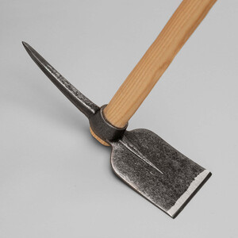
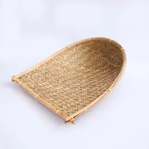

ⲙⲁⲛϭⲁⲗⲉ SB, -ⲗⲏ S (Ryl), -ϫⲁⲗⲉ S (BM) nn m = μάκελλα منجل: a B pick, hoe: C 86 13 earth ⲉⲩϩⲓⲟⲩⲓ ⲛϧⲏⲧϥ ⲙⲡⲓⲙ., MG 25 12 ⲟⲩⲁⲙⲉ (ἄμη) ⲛⲉⲙⲟⲩⲙ. that I may dig πέλεκυς, DeV 2 44 tearing out roots ϩⲓⲧⲉⲛⲫⲙ., P 55 10 ⲡⲓⲙ. هوجل (cf K 127 ⲁⲥⲑⲉⲣⲓⲱⲛ هوجل, cf Ryl 94 n). b winnowing fan: Am 9 9 B (SA ϩⲁ) λικμός; the following doubtful: PLond 4 517 S ⲧⲓⲉ (? f) ⲛ[ⲙ]ⲁⲛϭⲁⲗⲉ, Bodl(P) f 33 S ⲕⲟⲩⲓ (ⲙ)ⲙ., Ryl 238 S list of varia ⲟⲩⲙ., BMOr 6201 B 44 S ⲛ]ⲉⲕⲙ. ⲛⲧⲁⲕⲧⲥⲁⲃⲟⲓ ⲉⲣⲟⲟⲩ.
(noun male)
tool
pick, hoe [μακελλα]
winnowing fan [λικμος]
winnowing fan [λικμος]


complete
177b
See also:
| view | ϫⲁⲛⲏ B | (noun female) hoe2420 |
| view | ⲟⲃϩⲉ, ⲟⲃϩ S ⲁⲃϩⲉ A ⲁⲃⲁϩ, ⲁⲃϩ F | (noun female) tooth
― of man [οδους] ― of animals hoe, ploughshare889 |
| view | ⲉⲙⲉ SA ⲁⲙⲉ, ⲁⲙⲏ B | (noun female) hoe for digging [δικελλα]
plough drawn by oxen [αροτρον]656 |
| view | ϩⲁ, ϩⲟ S ⳉⲁ A ϧⲁⲓ B ϩⲉⲉⲓ F | (noun male) winnowing fan [πτυον]2095 |
| view | ⲙⲁⲧⲉⲙ F | (noun male) meaning unknown, named with winnowing fan2993 |